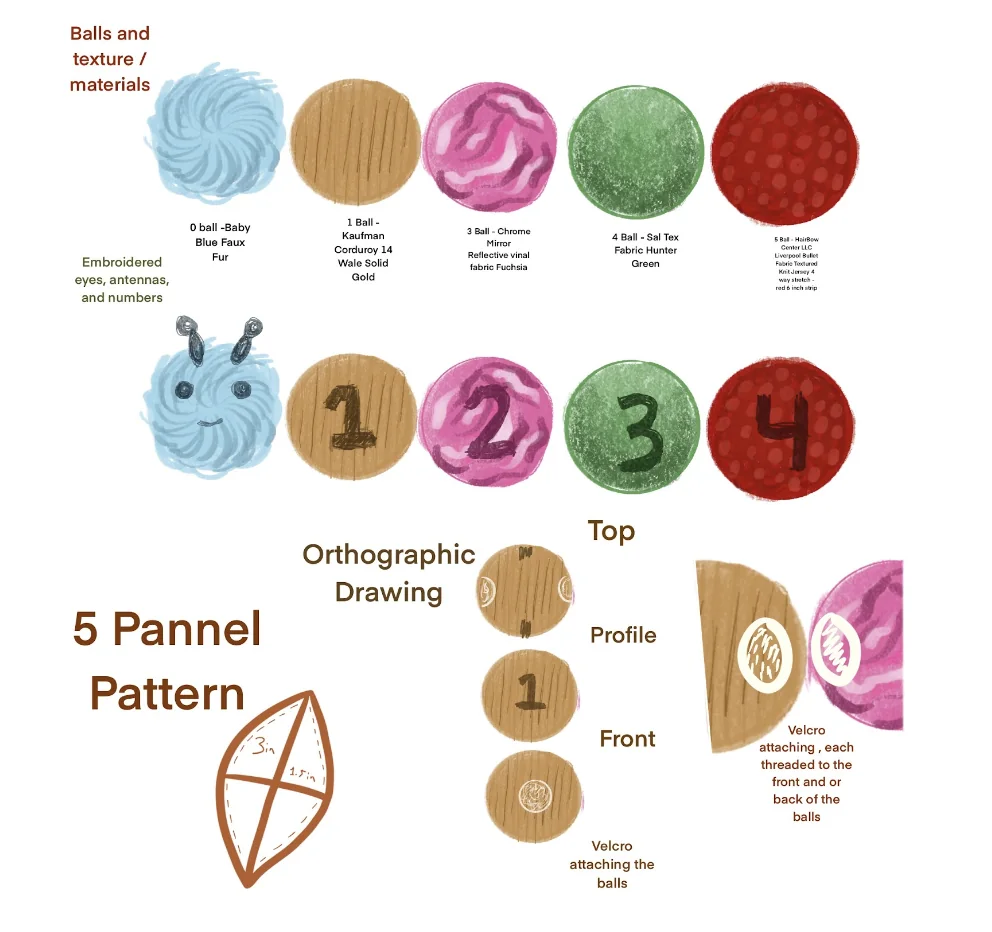
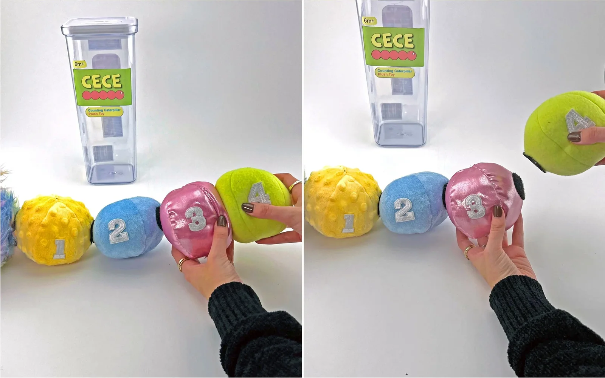
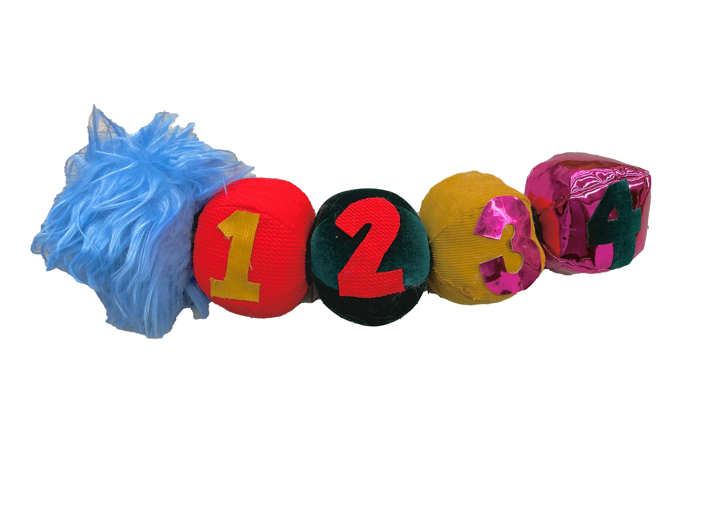

Cece the Counting Caterpillar — colorful, modular, and built to teach through play.
An affordable, educational, and safety-compliant infant toy, taken from concept to finished product through research, prototyping, and real user testing.
Cece the Counting Caterpillar — colorful, modular, and built to teach through play.
Parents increasingly expect their kids to walk, talk, count, and recite their ABCs before they ever reach elementary school. That puts a growing demand on infants to build cognitive and fine-motor skills in their first few years, right when a one-year-old is most curious about the world. But the toys that actually teach those skills while staying safe, affordable, and genuinely engaging are surprisingly hard to find.
Our challenge as a team: design, market, and test a multi-use educational toy for 10–12-month-olds that channels that curiosity into learning, meets every health and safety code, weighs under 4 lbs, and still retails for under $40.
I started with extensive research on two fronts. First, the regulations: toys for this age group have strict rules on material types, the size of attachments, the adhesives applied, and the fillings used, all there to keep the child safe. Second, the user: I had to understand what a 10–12-month-old is actually capable of doing, and what they're just beginning to learn.
I also interviewed parents of children in this age group. Since parents are the ones actually buying the toy, understanding what they look for, safety, value, developmental payoff, was just as important as designing for the infant who'd use it.
With the research in hand, I moved into ideation, sketching out forms and thinking through how each piece could support tactile play and early counting. From there I built a low-fidelity prototype out of fabric scraps, which became my testing ground: I experimented with materials, tested pull strength, and refined exactly how the segments connect and detach.
Every round of iteration drove the next set of decisions, on size, sewing patterns, textures, and colors, always balancing three things at once: safety, sensory stimulation, and educational value.



Designed specifically for 10–12-month-olds, aligning every feature with early cognitive and motor development.
Prioritized safety and compliance through careful material selection and construction methods.
Balanced learning and play, folding counting and motor-skill development into one simple interaction.
Used modular, detachable segments to encourage tactile engagement and fine motor skills.
Selected soft, durable materials and secure fasteners for safe, repeated use.
Worked within a strict cost constraint to keep the retail price under $40.
Cece the Counting Caterpillar is a multi-segment, colorful toy that promotes counting, addition, and fine-motor development. The segments detach and reattach for tactile engagement, while bright colors and varied textures give a rich sensory experience. Cece meets all safety regulations, weighs under 4 lbs, and retails for under $40, hitting every constraint in the brief.

"Jasper loved it."
From concept to final product, Cece brings research, prototyping, and testing together into an affordable, safe, and genuinely educational toy, designed with both child and parent in mind.